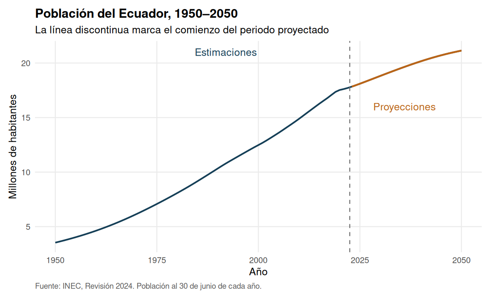
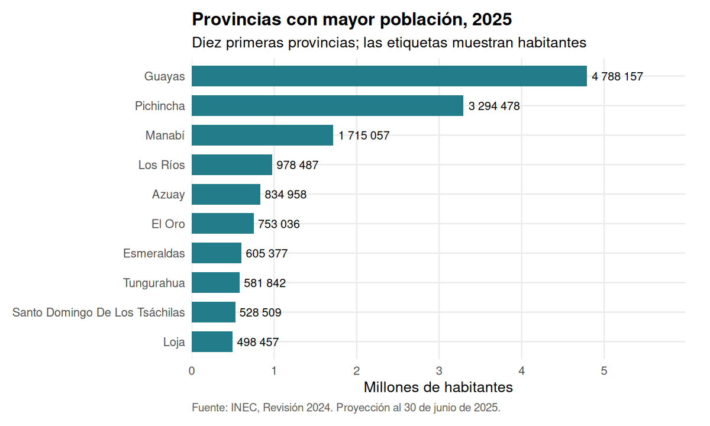
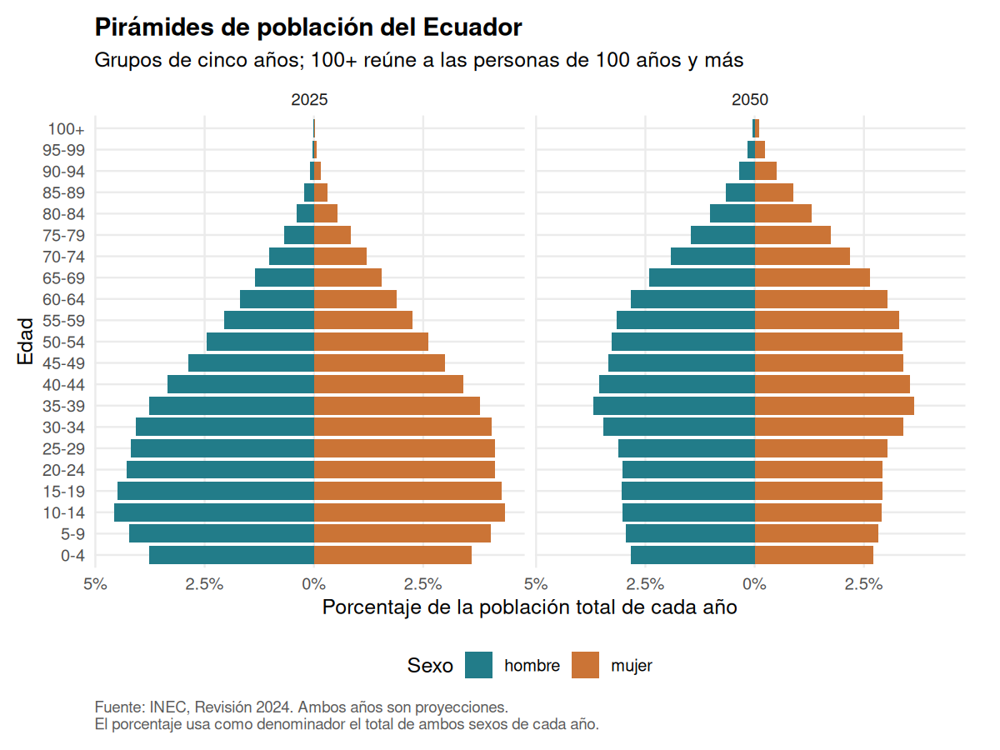
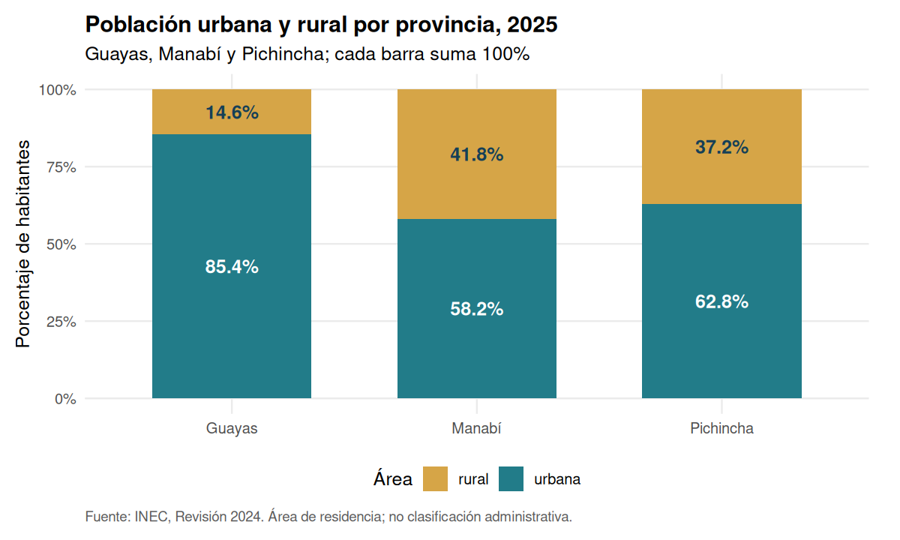
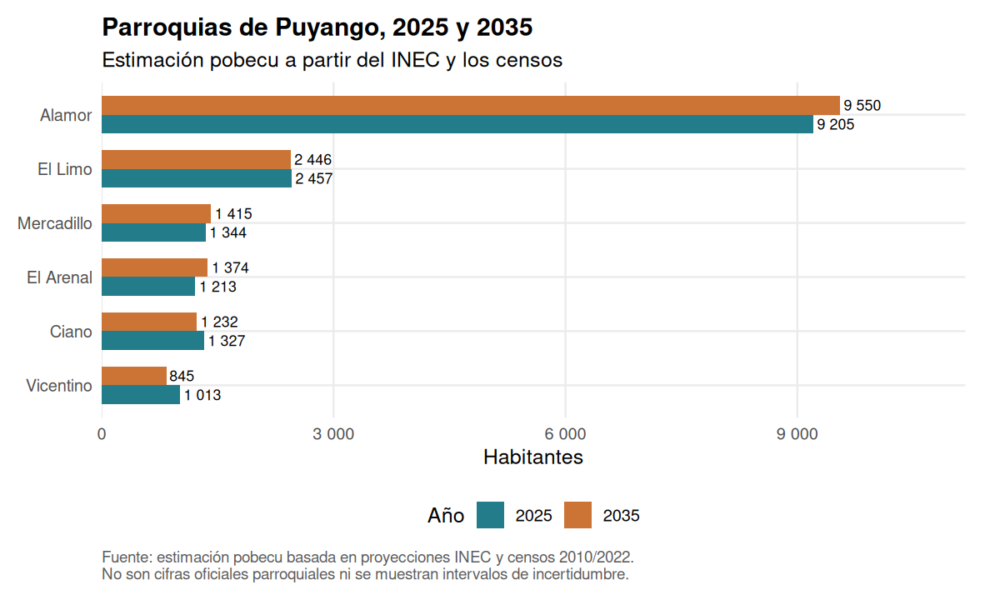
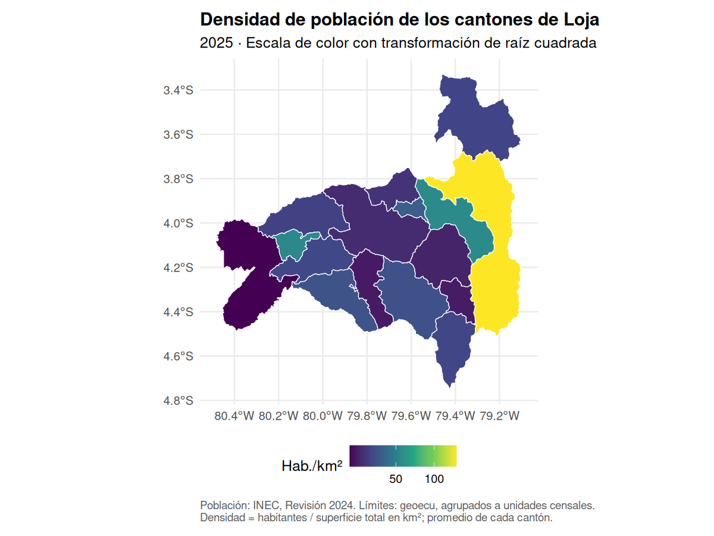

-
pobecu
- 1. Instalación y primera consulta
- 2. Consultar territorios y años
- 3. Evolución nacional: estimaciones y proyecciones
- 4. Comparar provincias
- 5. Edades simples, grupos y pirámides
- 6. Población urbana y rural
- 7. Unir denominadores y calcular tasas
- 8. Parroquias: estimación y coherencia
- 9. Códigos territoriales y mapas con geoecu
- 10. Guardar resultados y trabajar sin conexión
- 11. Contraste con los archivos originales
- 12. Metodología, referencias y contribuciones
Pruebas automáticas · Licencia MIT
Población del Ecuador por provincia, cantón y parroquia, lista para analizar en R. Consulta denominadores por año, sexo, edad y área de residencia; calcula tasas y construye mapas con códigos de la División Político-Administrativa (DPA).
Este es un paquete independiente. Las cifras nacionales, provinciales y cantonales proceden del INEC, Revisión 2024, actualización con áreas de 2025. Las cifras parroquiales son estimaciones propias de pobecu, no proyecciones oficiales del INEC.
Este README se genera ejecutando README.Rmd: las salidas #> son resultados reales de R y las figuras se producen con el código que las precede. Puedes abrir el Rmd en RStudio y elegir Knit → Knit to HTML para ver código, resultados y gráficos en un documento navegable. También tienes el guion completo para R: ejecútalo por bloques en RStudio o con source("inst/examples/guia-pobecu.R", echo = TRUE) desde la raíz del repositorio para imprimir código, resultados y gráficos.
1. Instalación y primera consulta
Ejecuta la instalación una sola vez. La compilación de viñetas es opcional; la consulta de grupos quinquenales no necesita conexión a Internet.
install.packages("remotes")
remotes::install_github("f-slg/pobecu")
# Para reproducir los gráficos de esta guía
install.packages(c("ggplot2", "scales"))
# Solo para los mapas
install.packages(c("geoecu", "sf"))
# Solo para abrir esta guía como documento HTML desde RStudio
install.packages(c("rmarkdown", "knitr"))
library(pobecu)
library(ggplot2)
poblacion("nacional", anio = c(2022, 2025, 2030))
#> anio poblacion
#> 1 2022 17715301
#> 2 2025 18103660
#> 3 2030 18815497Cada fila representa una combinación de territorio, año y desagregaciones. poblacion cuenta habitantes; anio es el año de referencia al 30 de junio. Hasta 2022 se trata de estimaciones demográficas del pasado; desde 2023, de proyecciones. Las cifras de 2022 no equivalen al conteo del censo.
Para ver la cobertura disponible:
pob_fuentes()
#> pobecu 0.2.0.9000 · datos datos-v0.1.0
#> Estimaciones hasta 2022 y proyecciones desde 2023, al 30 de junio de cada año.
#>
#> nivel periodo area edad tipo
#> nacional 1950-2050 2010-2035 0-100+ oficial
#> provincia 1990-2035 2010-2035 0-100+ oficial
#> canton 2010-2035 2010-2035 0-100+ oficial
#> parroquia 2010-2035 no 0-4 ... 85+ estimación pobecu
#>
#> Fuentes:
#> * INEC, Estimaciones y Proyecciones de Población, Revisión 2024 (actualización con áreas, 2025).
#> https://www.ecuadorencifras.gob.ec/proyecciones-poblacionales/
#> * INEC, VIII Censo de Población y VII de Vivienda 2022.
#> https://www.censoecuador.gob.ec/resultados-censo/
#> Las cifras parroquiales no son oficiales: ver ?pob_parroquias.| Nivel | Años | Edad | Área urbana/rural | Naturaleza |
|---|---|---|---|---|
| Nacional | 1950–2050 | Simple o quinquenal, hasta 100+ | 2010–2035 | INEC |
| Provincia | 1990–2035 | Simple o quinquenal, hasta 100+ | 2010–2035 | INEC |
| Cantón | 2010–2035 | Simple o quinquenal, hasta 100+ | 2010–2035 | INEC |
| Parroquia | 2010–2035 | Quinquenal, hasta 85+ | No disponible | Estimación pobecu |
2. Consultar territorios y años
Los nombres admiten mayúsculas o minúsculas y tildes. Los códigos numéricos recuperan sus ceros iniciales. Para nombres repetidos, como Bolívar u Olmedo, indica también la provincia o utiliza el código DPA.
# Todas las provincias; mostramos las seis primeras filas
provincias_2025 <- poblacion("provincia", anio = 2025)
head(provincias_2025)
#> dpa_provin provincia anio poblacion
#> 1 01 Azuay 2025 834958
#> 2 02 Bolívar 2025 204351
#> 3 03 Cañar 2025 237460
#> 4 04 Carchi 2025 177020
#> 5 05 Cotopaxi 2025 493382
#> 6 06 Chimborazo 2025 487355
# Un cantón, dos años y desagregación por sexo
poblacion("canton", anio = 2025:2026, canton = "loja", sexo = TRUE)
#> dpa_canton canton dpa_provin provincia anio sexo poblacion
#> 1 1101 Loja 11 Loja 2025 hombre 124296
#> 2 1101 Loja 11 Loja 2025 mujer 134218
#> 3 1101 Loja 11 Loja 2026 hombre 125024
#> 4 1101 Loja 11 Loja 2026 mujer 134953
# Buscar un territorio antes de consultar
buscar_pob("olmedo", nivel = "canton")
#> dpa_canton canton dpa_provin provincia
#> 1 1116 Olmedo 11 Loja
#> 2 1318 Olmedo 13 Manabí
# Resolver la ambigüedad con la provincia
poblacion("canton", anio = 2025, provincia = "Loja", canton = "Olmedo")
#> dpa_canton canton dpa_provin provincia anio poblacion
#> 1 1116 Olmedo 11 Loja 2025 4134sexo = FALSE suma hombres y mujeres. edad = NULL suma todas las edades. anio = NULL devuelve todos los años disponibles para ese nivel; conviene especificarlo si solo necesitas un corte anual.
3. Evolución nacional: estimaciones y proyecciones
El gráfico distingue los periodos para evitar interpretar el futuro como un dato observado. El eje vertical se expresa en millones de habitantes.
nacional <- poblacion("nacional")
nacional$periodo <- ifelse(nacional$anio <= 2022, "Estimación", "Proyección")
tema_pob <- theme_minimal(base_size = 12) +
theme(panel.grid.minor = element_blank(),
plot.title = element_text(face = "bold"),
plot.caption = element_text(hjust = 0, color = "grey35", size = 9),
plot.margin = margin(10, 20, 10, 10),
legend.position = "bottom")
grafico_serie <- ggplot(nacional, aes(anio, poblacion / 1e6)) +
geom_line(color = "#153F57", linewidth = 0.9) +
geom_line(data = subset(nacional, anio >= 2023),
color = "#BA6518", linewidth = 1) +
geom_vline(xintercept = 2022.5, linetype = "dashed", color = "grey45") +
annotate("text", x = 1992, y = 21, label = "Estimaciones", color = "#153F57") +
annotate("text", x = 2036, y = 16, label = "Proyecciones", color = "#BA6518") +
labs(title = "Población del Ecuador, 1950–2050",
subtitle = "La línea discontinua marca el comienzo del periodo proyectado",
x = "Año", y = "Millones de habitantes",
caption = "Fuente: INEC, Revisión 2024. Población al 30 de junio de cada año.") + tema_pob
grafico_serie
Población del Ecuador: estimaciones hasta 2022 y proyecciones desde 2023. Fuente: INEC, Revisión 2024.
subset(nacional, anio %in% c(1950, 2010, 2022, 2025, 2030, 2050))
#> anio poblacion periodo
#> 1 1950 3536810 Estimación
#> 61 2010 14883661 Estimación
#> 73 2022 17715301 Estimación
#> 76 2025 18103660 Proyección
#> 81 2030 18815497 Proyección
#> 101 2050 21141923 ProyecciónLa curva resume el volumen total de población. Una curva creciente no significa que todos los territorios o grupos de edad crezcan al mismo ritmo.
4. Comparar provincias
Ordenar las barras facilita reconocer la concentración de población. Se muestran las diez provincias más pobladas, sin confundir este ranking con densidad.
top10 <- head(provincias_2025[order(-provincias_2025$poblacion), ], 10)
top10
#> dpa_provin provincia anio poblacion
#> 9 09 Guayas 2025 4788157
#> 17 17 Pichincha 2025 3294478
#> 13 13 Manabí 2025 1715057
#> 12 12 Los Ríos 2025 978487
#> 1 01 Azuay 2025 834958
#> 7 07 El Oro 2025 753036
#> 8 08 Esmeraldas 2025 605377
#> 18 18 Tungurahua 2025 581842
#> 23 23 Santo Domingo De Los Tsáchilas 2025 528509
#> 11 11 Loja 2025 498457
ggplot(top10, aes(poblacion / 1e6, reorder(provincia, poblacion))) +
geom_col(fill = "#227C89", width = 0.7) +
geom_text(aes(label = scales::number(poblacion, accuracy = 1, big.mark = " ")),
hjust = -0.1, size = 3.3) +
scale_x_continuous(expand = expansion(mult = c(0, 0.25))) +
labs(title = "Provincias con mayor población, 2025",
subtitle = "Diez primeras provincias; las etiquetas muestran habitantes",
x = "Millones de habitantes", y = NULL,
caption = "Fuente: INEC, Revisión 2024. Proyección al 30 de junio de 2025.") + tema_pob
Diez provincias más pobladas en 2025. Fuente: INEC.
5. Edades simples, grupos y pirámides
edad |
Qué devuelve | Datos necesarios |
|---|---|---|
NULL |
Todas las edades sumadas | Incluidos |
"quinquenal" |
0–4, 5–9, …, 100+; parroquias hasta 85+ | Incluidos |
"simple" |
0, 1, 2, …, 100 (100 significa 100+) | Descarga inicial |
"etapas" |
0–11, 12–17, 18–29, 30–64, 65+ | Descarga inicial |
c(0, 5, 15, 65) |
0–4, 5–14, 15–64, 65+ | Incluidos |
c(0, 1, 5) |
0, 1–4, 5+ | Descarga inicial |
Los cortes son los inicios de cada grupo; el último es abierto. Para parroquias solo se admiten cortes múltiplos de cinco hasta 85. El archivo de edades simples se descarga una vez y queda guardado en caché.
poblacion("canton", anio = 2026, canton = "Loja", edad = c(0, 1, 5))
#> dpa_canton canton dpa_provin provincia anio edad poblacion
#> 1 1101 Loja 11 Loja 2026 0 3427
#> 2 1101 Loja 11 Loja 2026 1-4 15224
#> 3 1101 Loja 11 Loja 2026 5+ 241326
poblacion("provincia", anio = 2030, provincia = "Pichincha", edad = "etapas")
#> dpa_provin provincia anio edad poblacion
#> 1 17 Pichincha 2030 0-11 447539
#> 2 17 Pichincha 2030 12-17 296136
#> 3 17 Pichincha 2030 18-29 620040
#> 4 17 Pichincha 2030 30-64 1665096
#> 5 17 Pichincha 2030 65+ 371097La pirámide usa porcentajes del total de ambos sexos de cada año. Los valores negativos solo colocan a los hombres a la izquierda; la población no es negativa.
pir <- poblacion("nacional", anio = c(2025, 2050),
sexo = TRUE, edad = "quinquenal")
pir$porcentaje <- 100 * pir$poblacion / ave(pir$poblacion, pir$anio, FUN = sum)
pir$posicion <- ifelse(pir$sexo == "hombre", -pir$porcentaje, pir$porcentaje)
ggplot(pir, aes(posicion, edad, fill = sexo)) +
geom_col(width = 0.85) +
facet_wrap(~anio) +
scale_fill_manual(values = c(hombre = "#227C89", mujer = "#CB7436")) +
scale_x_continuous(labels = function(x) paste0(abs(x), "%")) +
labs(title = "Pirámides de población del Ecuador",
subtitle = "Grupos de cinco años; 100+ reúne a las personas de 100 años y más",
x = "Porcentaje de la población total de cada año", y = "Edad", fill = "Sexo",
caption = "Fuente: INEC, Revisión 2024. Ambos años son proyecciones.\nEl porcentaje usa como denominador el total de ambos sexos de cada año.") +
tema_pob
Estructura de la población nacional por sexo y edad en 2025 y 2050. Fuente: INEC.
Un mayor peso de los grupos de edad avanzada señala envejecimiento de la estructura poblacional. La comparación de 2050 corresponde a la proyección del INEC, no a un resultado observado ni a un intervalo de confianza.
6. Población urbana y rural
area = TRUE separa residencia urbana y rural. Este argumento exige años entre 2010 y 2035; por eso se especifica anio incluso al consultar el nivel nacional.
areas <- poblacion("provincia", anio = 2025,
provincia = c("Guayas", "Pichincha", "Manabí"), area = TRUE)
areas
#> dpa_provin provincia anio area poblacion
#> 1 09 Guayas 2025 urbana 4087913
#> 2 09 Guayas 2025 rural 700244
#> 3 13 Manabí 2025 urbana 997508
#> 4 13 Manabí 2025 rural 717549
#> 5 17 Pichincha 2025 urbana 2070248
#> 6 17 Pichincha 2025 rural 1224230
areas$porcentaje <- 100 * areas$poblacion /
ave(areas$poblacion, areas$provincia, FUN = sum)
ggplot(areas, aes(provincia, poblacion, fill = area)) +
geom_col(position = "fill", width = 0.65) +
geom_text(aes(label = paste0(format(round(porcentaje, 1), nsmall = 1), "%"),
color = area),
position = position_fill(vjust = 0.5), fontface = "bold") +
scale_color_manual(values = c(rural = "#153F57", urbana = "white"), guide = "none") +
scale_y_continuous(labels = scales::label_percent()) +
scale_fill_manual(values = c(rural = "#D6A547", urbana = "#227C89")) +
labs(title = "Población urbana y rural por provincia, 2025",
subtitle = "Guayas, Manabí y Pichincha; cada barra suma 100%",
x = NULL, y = "Porcentaje de habitantes", fill = "Área",
caption = "Fuente: INEC, Revisión 2024. Área de residencia; no clasificación administrativa.") + tema_pob
Composición urbana y rural de tres provincias en 2025. Fuente: INEC.
Las barras muestran proporciones: dos provincias pueden tener una composición similar y cantidades de habitantes muy diferentes. El área de residencia no equivale a la clasificación administrativa de una parroquia.
7. Unir denominadores y calcular tasas
Los siguientes numeradores son ficticios y sirven únicamente para aprender el procedimiento. La población utilizada como denominador sí procede del INEC. Numerador y denominador deben corresponder al mismo territorio, periodo, sexo y grupo de edad.
casos <- data.frame(
dpa_canton = c(1101, 1102, 701),
anio = 2025,
casos = c(120, 8, 40)
)
tasas <- pob_tasa(casos, "casos", por = 100000)
tasas
#> dpa_canton anio casos poblacion tasa
#> 1 1101 2025 120 258514 46.41915
#> 2 1102 2025 8 26374 30.33290
#> 3 701 2025 40 324062 12.34332
# Comprobación de la fórmula: casos / habitantes × base
stopifnot(all.equal(tasas$tasa, tasas$casos / tasas$poblacion * 100000))pob_unir(casos) agrega solo poblacion. pob_tasa() agrega además tasa. Las funciones conservan el orden y los códigos originales de la tabla. Un código sin correspondencia deja NA y genera una advertencia.
Para tasas específicas, pide explícitamente las desagregaciones: tener una columna sexo o edad no activa automáticamente su uso.
casos_sexo <- data.frame(dpa_provin = "11", anio = factor("2025"),
sexo = c("hombre", "mujer"), casos = c(10, 14))
pob_tasa(casos_sexo, "casos", nivel = "provincia", sexo = TRUE)
#> dpa_provin anio sexo casos poblacion tasa
#> 1 11 2025 hombre 10 243527 4.106321
#> 2 11 2025 mujer 14 254930 5.491704
# Numeradores ficticios de menores de un año
vacunas <- data.frame(dpa_provin = c("01", "11"), anio = 2025,
edad = "0", vacunados = c(11800, 6900))
cobertura <- pob_unir(vacunas, nivel = "provincia", edad = "simple")
cobertura$cobertura_pct <- 100 * cobertura$vacunados / cobertura$poblacion
cobertura
#> dpa_provin anio edad vacunados poblacion cobertura_pct
#> 1 01 2025 0 11800 12589 93.73262
#> 2 11 2025 0 6900 7316 94.31383No sumes ni promedies tasas para obtener una tasa conjunta: suma primero los casos y sus denominadores compatibles y calcula después el cociente. Una cobertura superior a 100% requiere revisar numeradores, residencia, duplicados y población objetivo; no debe recortarse automáticamente.
Población cero y entradas inválidas
Una tasa con denominador cero es indefinida, incluso si hay cero casos. Desde esta versión se devuelve NA con advertencia, en lugar de Inf o NaN.
ejemplo_cero <- data.frame(dpa_parroq = "060256", anio = 2025,
sexo = "hombre", edad = "70-74", casos = 1)
pob_tasa(ejemplo_cero, "casos", nivel = "parroquia",
sexo = TRUE, edad = "quinquenal")
#> Nota: las cifras parroquiales son una estimación de pobecu a partir de las proyecciones cantonales del INEC; no son cifras oficiales. Ver ?pob_parroquias. (Este aviso se muestra una vez por sesión.)
#> Warning: 1 fila(s) con población cero: la tasa se devuelve como NA.
#> dpa_parroq anio sexo edad casos poblacion tasa
#> 1 060256 2025 hombre 70-74 1 0 NALos años decimales se rechazan; los factores se interpretan por su etiqueta. La base por debe ser positiva y finita. Los casos deben ser numéricos y no negativos; NA permanece desconocido y los casos ponderados pueden ser fraccionarios.
8. Parroquias: estimación y coherencia
El paquete representa 1042 unidades del Censo 2022: 221 cabeceras cantonales y 821 parroquias rurales. Las parroquias urbanas de un cantón se agrupan en la cabecera con sufijo 50. Las estimaciones se construyen repartiendo la proyección cantonal según las participaciones censales y ajustando la estructura por sexo y edad.
parroquias <- poblacion("parroquia", anio = c(2025, 2035), canton = "Puyango")
parroquias
#> dpa_parroq parroquia dpa_canton canton dpa_provin provincia anio poblacion
#> 1 111050 Alamor 1110 Puyango 11 Loja 2025 9205
#> 2 111050 Alamor 1110 Puyango 11 Loja 2035 9550
#> 3 111051 Ciano 1110 Puyango 11 Loja 2025 1327
#> 4 111051 Ciano 1110 Puyango 11 Loja 2035 1232
#> 5 111052 El Arenal 1110 Puyango 11 Loja 2025 1213
#> 6 111052 El Arenal 1110 Puyango 11 Loja 2035 1374
#> 7 111053 El Limo 1110 Puyango 11 Loja 2025 2457
#> 8 111053 El Limo 1110 Puyango 11 Loja 2035 2446
#> 9 111054 Mercadillo 1110 Puyango 11 Loja 2025 1344
#> 10 111054 Mercadillo 1110 Puyango 11 Loja 2035 1415
#> 11 111055 Vicentino 1110 Puyango 11 Loja 2025 1013
#> 12 111055 Vicentino 1110 Puyango 11 Loja 2035 845
ggplot(parroquias, aes(reorder(parroquia, poblacion), poblacion, fill = factor(anio))) +
geom_col(position = "dodge", width = 0.7) +
geom_text(aes(label = scales::number(poblacion, accuracy = 1, big.mark = " ")),
position = position_dodge(width = 0.7), hjust = -0.1, size = 3) +
coord_flip() +
scale_y_continuous(labels = scales::label_number(big.mark = " ", decimal.mark = ","),
expand = expansion(mult = c(0, 0.17))) +
scale_fill_manual(values = c("2025" = "#227C89", "2035" = "#CB7436")) +
labs(title = "Parroquias de Puyango, 2025 y 2035",
subtitle = "Estimación pobecu a partir del INEC y los censos",
x = NULL, y = "Habitantes", fill = "Año",
caption = "Fuente: estimación pobecu basada en proyecciones INEC y censos 2010/2022.\nNo son cifras oficiales parroquiales ni se muestran intervalos de incertidumbre.") + tema_pob
Estimaciones propias de pobecu para las parroquias de Puyango. No son cifras oficiales del INEC.
control <- aggregate(poblacion ~ anio, parroquias, sum)
oficial <- poblacion("canton", anio = c(2025, 2035), canton = "Puyango")
control$diferencia <- control$poblacion - oficial$poblacion[match(control$anio, oficial$anio)]
control
#> anio poblacion diferencia
#> 1 2025 16559 0
#> 2 2035 16862 0
stopifnot(all(control$diferencia == 0))Que la suma sea exacta verifica coherencia contable, no demuestra que la estimación de cada parroquia sea exacta. El modelo prolonga tendencias censales 2010–2022, no ofrece intervalos de incertidumbre y puede no captar cambios locales recientes. El redondeo preserva el total cantonal de cada sexo y grupo de edad; los totales parroquiales pueden diferir ligeramente del objetivo previo al redondeo.
9. Códigos territoriales y mapas con geoecu
geoecu desde 0.4.0 usa la DPA del CONALI 2026. pobecu usa unidades del Censo 2022. Antes de unir casos con población, convierte y agrega los códigos:
homologar_parroquia(c("010101", "010115", "010151", "131251"))
#> [1] "010150" "010150" "010151" "131250"
homologar_canton(c("0809", "1413"))
#> [1] "0802" "1401"
# Casos ficticios: Borbón y Eloy Alfaro deben formar una sola unidad censal
casos_nuevos <- data.frame(dpa_canton = c("0802", "0809"), anio = 2025,
casos = c(7, 5))
casos_nuevos$dpa_canton <- homologar_canton(casos_nuevos$dpa_canton)
casos_censo <- aggregate(casos ~ dpa_canton + anio, casos_nuevos, sum)
pob_tasa(casos_censo, "casos")
#> dpa_canton anio casos poblacion tasa
#> 1 0802 2025 12 52040 23.05919La conversión de códigos no siempre reconstruye exactamente los límites antiguos. Por ejemplo, La Magdalena proviene de varias parroquias y se asigna a Shushufindi, su origen mayoritario. Esa equivalencia es una aproximación territorial: consúltala en ?homologar_parroquia antes de analizar esos territorios.
Mapa de densidad
La primera consulta cartográfica descarga las capas de geoecu. El ejemplo usa Loja para que los cantones sean legibles. pob_mapa() agrupa las unidades y devuelve un objeto sf; la densidad divide habitantes entre area_km2.
mapa <- pob_mapa("canton", anio = 2025, provincia = "Loja")
detalle_mapa <- sf::st_drop_geometry(mapa)[,
c("dpa_canton", "canton", "poblacion", "area_km2", "densidad")]
detalle_mapa$area_km2 <- round(detalle_mapa$area_km2, 2)
detalle_mapa$densidad <- round(detalle_mapa$densidad, 2)
detalle_mapa[order(-detalle_mapa$densidad), ]
#> dpa_canton canton poblacion area_km2 densidad
#> 1 1101 Loja 258514 1891.24 136.69
#> 3 1103 Catamayo 36428 651.85 55.88
#> 14 1114 Pindal 10987 202.00 54.39
#> 16 1116 Olmedo 4134 113.78 36.33
#> 8 1108 Macará 18520 573.03 32.32
#> 2 1102 Calvas 26374 851.00 30.99
#> 4 1104 Celica 14676 521.60 28.14
#> 6 1106 Espíndola 14277 516.25 27.66
#> 11 1111 Saraguro 29588 1084.88 27.27
#> 10 1110 Puyango 16559 636.99 26.00
#> 5 1105 Chaguarpamba 6875 313.23 21.95
#> 9 1109 Paltas 22929 1156.17 19.83
#> 7 1107 Gonzanamá 12421 681.90 18.22
#> 15 1115 Quilanga 3925 236.52 16.59
#> 12 1112 Sozoranga 6917 421.88 16.40
#> 13 1113 Zapotillo 15333 1211.58 12.66
grafico_mapa <- ggplot(mapa) +
geom_sf(aes(fill = densidad), color = "white", linewidth = 0.3) +
scale_fill_viridis_c(trans = "sqrt", name = "Hab./km²") +
labs(title = "Densidad de población de los cantones de Loja",
subtitle = "2025 · Escala de color con transformación de raíz cuadrada",
caption = "Población: INEC, Revisión 2024. Límites: geoecu, agrupados a unidades censales.\nDensidad = habitantes / superficie total en km²; promedio de cada cantón.") +
tema_pob
grafico_mapa
Densidad por cantón de Loja en 2025. Población: INEC; geometrías: geoecu, agrupadas a unidades censales.
La densidad es un promedio territorial: no muestra dónde se concentran los habitantes dentro de un cantón. Con sexo, edad o area, el cociente usa la superficie completa del polígono; en particular, no mide la densidad sobre una superficie urbana o rural delimitada por separado. Las zonas en estudio se conservan con población NA.
10. Guardar resultados y trabajar sin conexión
# En la carpeta de trabajo de tu sesión de R
write.csv(tasas, "tasas_cantonales.csv", row.names = FALSE, fileEncoding = "UTF-8")
ggsave("poblacion_nacional.png", grafico_serie, width = 9, height = 5, dpi = 300)
ggsave("densidad_loja.png", grafico_mapa, width = 8, height = 6, dpi = 300)
# Preparar las edades simples mientras hay Internet
poblacion("nacional", anio = 2025, edad = "simple")
pobecu_cache_dir()
pobecu_datos_disponibles()
# En otro equipo: copiar pobecu_edad_simple.rds a una carpeta existente
pobecu_usar_carpeta("ruta/a/mis_datos")
# También se puede definir POBECU_CARPETA en .Renvironpobecu_usar_carpeta(NULL) restablece la búsqueda predeterminada (incluida POBECU_CARPETA, si está definida). pobecu_limpiar_cache() elimina los archivos descargados de pobecu; úsalo solo si quieres descargarlos otra vez. Los mapas tienen una caché independiente, gestionada por geoecu.
11. Contraste con los archivos originales
La auditoría está en validacion/README.md, con fuentes, huellas de los archivos, alcance y resultados. El script 07_validar_fuentes.R lee directamente los Excel con un lector independiente del usado para construir el paquete y comprueba:
- Cada celda de edad simple y cada grupo quinquenal de los tres niveles oficiales.
- Hombre + mujer = total y urbano + rural = total en los tabulados originales.
- Los conteos censales 2010 y 2022 de las 1042 parroquias por sus nombres territoriales.
- Las estimaciones parroquiales sumadas a su cantón, en todos los años, sexos y edades.
La validación de cifras no constituye una validación predictiva del modelo parroquial. Los Excel son la referencia de contraste; una cifra aislada en la página resumen del INEC puede contener errores de transcripción.
| comprobacion | celdas | diferencias | faltantes | extras | max_diferencia |
|---|---|---|---|---|---|
| nacional-total-sexos | 10201 | 0 | 0 | 0 | 0 |
| nacional-area-sexos | 5252 | 0 | 0 | 0 | 0 |
| nacional-urbano-rural | 5252 | 0 | 0 | 0 | 0 |
| nacional-edades-simples | 25654 | 0 | 0 | 0 | 0 |
| nacional-quinquenales | 5334 | 0 | 0 | 0 | 0 |
| provincia-total-sexos | 111504 | 0 | 0 | 0 | 0 |
| provincia-area-sexos | 126048 | 0 | 0 | 0 | 0 |
| provincia-urbano-rural | 126048 | 0 | 0 | 0 | 0 |
| provincia-edades-simples | 349056 | 0 | 0 | 0 | 0 |
| provincia-quinquenales | 72576 | 0 | 0 | 0 | 0 |
| canton-total-sexos | 580346 | 0 | 0 | 0 | 0 |
| canton-area-sexos | 1160692 | 0 | 0 | 0 | 0 |
| canton-urbano-rural | 1160692 | 0 | 0 | 0 | 0 |
| canton-edades-simples | 2321384 | 0 | 0 | 0 | 0 |
| canton-quinquenales | 482664 | 0 | 0 | 0 | 0 |
| censo_2010 | 1042 | 0 | 0 | 0 | 0 |
| censo_2022 | 1042 | 0 | 0 | 0 | 0 |
| parroquias-suman-canton | 206856 | 0 | 0 | 0 | 0 |
| provincia-suma-nacional | 1932 | 0 | 0 | 0 | 0 |
| canton-suma-provincia | 26208 | 0 | 0 | 0 | 0 |
Resultados de la auditoría reproducible.
Reproducir esta guía desde el repositorio
install.packages(c("pkgload", "readxl", "rmarkdown", "knitr", "roxygen2", "testthat"))
# Directorio de trabajo: la raíz de tu copia de pobecu
source("data-raw/08_generar_guia.R")El script genera README.md, las figuras, guia-pobecu.html y el guion inst/examples/guia-pobecu.R. La versión HTML conserva los gráficos dentro del archivo y se puede abrir sin conexión. La guía usa años fijos para reproducir los mismos ejemplos; no cambia sus resultados al cambiar el año del sistema.
12. Metodología, referencias y contribuciones
Las cifras oficiales se reorganizan en formato largo y se agregan por edad sin cambiar sus valores. Para parroquias, el procedimiento es:
- Calcular la participación parroquial en su cantón en los censos 2010 y 2022.
- Interpolar y extrapolar las participaciones en escala logit y normalizarlas dentro de cada cantón. Si faltan antecedentes de 2010, mantener la participación de 2022.
- Repartir la población cantonal oficial y ajustar sexo y edad mediante ajuste proporcional iterativo (IPF), partiendo de la estructura censal de 2022.
- Redondear por mayor residuo preservando cada total cantonal por sexo y edad.
Las fuentes, fórmulas y limitaciones se desarrollan en la viñeta metodológica. La viñeta de mapas amplía los ejemplos cartográficos.
citation("pobecu")
#> To cite package 'pobecu' in publications use:
#>
#> Salas Guerrero, R. F. (2026). pobecu: Población del Ecuador por provincia,
#> cantón y parroquia. Paquete de R versión 0.2.0.9000.
#> https://github.com/f-slg/pobecu
#>
#> INEC (2024). Estimaciones y Proyecciones de Población del Ecuador, Revisión
#> 2024. Quito: Instituto Nacional de Estadística y Censos.
#> https://www.ecuadorencifras.gob.ec/proyecciones-poblacionales/
#>
#> To see these entries in BibTeX format, use 'print(<citation>, bibtex=TRUE)',
#> 'toBibtex(.)', or set 'options(citation.bibtex.max=999)'.Fuentes primarias:
- INEC: Estimaciones y Proyecciones de Población.
- Tabulados oficiales de proyecciones, actualización con áreas.
- INEC: estructura poblacional del Censo 2022.
Si usas datos parroquiales, declara que son estimaciones de pobecu y cita también la fuente censal y las proyecciones cantonales del INEC.
Los errores y propuestas se reciben en Issues. Consulta la guía de contribución y el código de conducta. Código bajo licencia MIT; datos procedentes de las publicaciones del INEC.